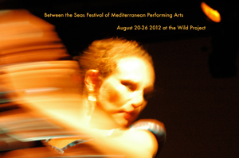

past performance | ||
|  |
Between the Seas Festival of Mediterranean Performing Arts | |
|
Between the Seas Festival of Mediterranean Performing Arts is thrilled to return to the Wild Project for its second edition that will run from August 20th to the 26th. This year's program will bring NYC and USA premieres from Israel (Noa Dar and Rachel Erdos with Ido Tadmor), Lebanon (Lina Abiad), and Greece (Olga Pozeli); an exciting collaboration between Denmark's Mancopy Dance Company with dancers from Egypt, Lebanon and Palestine; NYC-based Turkish choreographer Korhan Basaran, the fierce flamenco performer Rebeca Tomas, Italy's Celli Contemporary Ballet and more. Visit www.betweentheseas.org for more details. schedule:Monday Aug 20: Tuesday Aug 21: Wednesday Aug 22: Thursday Aug 23: Friday Aug 24: Saturday Aug 25: Sunday Aug 26: | ||
upcoming performances |
|||
 |
|||
| EVQ Film Festival 2018 August 20-25 |
|||
performance archives |
|||
| 2018 | 2017 | 2016 | 2015 |
| 2014 | 2013 | 2012 | 2011 |
| 2010 | 2009 | 2008 | 2007 |